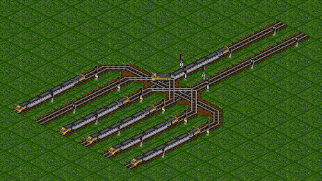
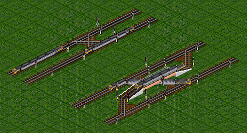
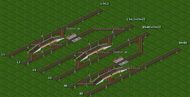
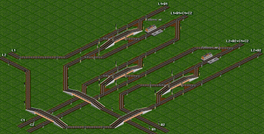

Simplified 6 to 4 merger
Some of most comonly used elements in network are mergers, pretty much any network node such as hub or station require track/lane mixing. Easiest of them all is just a simple cross of as many lanes there are to as many as needed, however since that would be a one single block – only one train can pass it at given time and that would lower thoughput to pretty much same level as a single lane no mater how many output tracks there are:

Only one train at time can pass through.
Solution to that is smarter mergers that allow multiple trains to enter/exit it independantly at any time. Also, mergers often used to balance traffic across multiple exiting lanes. So trains following each other would end up on multiple tracks making it easier to hanndle traffic later.

Example above is blocking and unbalanced, below none blocking and balanced.Bear in mind – balancing, in general, should be used as often as possible but only as needed. Exiting lines might not have quite identical purposes or simply going to different directions and should not be forced balanced or trains will end up going lost.
Now more fancy stuff… 2×2 merger is relatively simple and compact… how about 6×4? That is 6 lanes incoming (for example two LLL_RRR or three LL_RR mainlines) and 4 lanes exiting (to be post merged into something even more compact, split into pairs of LL_RR or simply go on as LLLL_RRRR)
A full blown, proper solution would imply split each of 6 lanes 4 ways and join each of 4 bunches of different 6 lanes into 1… Which would be extrimly bulky, so some sacrifices can (should) be made to fit such monstrocity in – meaning not all incoming lanes will have access to all outgoing, or some lanes will be merged into “during” split.
And here is an example how it can be done in more or less nice way: 
Basicaly, it is a set of three 2×2 mergers working in parallel. Left (L1 & L2) and reight (R1 and R2) lines are mixed on 2 balancers wich have exiting lanes of different priority. Outter ones will be more likely to have trains of these direction rather than middle ones. this is donw with 2 stations placed within 2×2 balancers which lower track priority for pathfinder and trains are less likely to choose that track if they have both lanes open. As long as there is only one train entering these mergers at time it will always go into outter lanes. In case of 2 entering – one will end up on middle ones. Essentially one ouput is “primary” and another is “failover”. The point of that is to reduce amount of trains hitting midder lanes because they have more trains mixed into them. 2 outter exits can be accessed only by 2 lanes each and 2 middle ones – by 4 each.

- Pros:
- no 2×1 merger, all lanes have choices
- 3 parallel trains from any lanes can go through at same time w/o delays caused by blocking each other
- 4 parallel trains from most lanes can go through at same time w/o delays caused by blocking each other
- Cons:
- Not fully balanced, not all incomming lanes have access to all outgoing
- Not balanced between directions – 2 train on central and 2 on any other direction will result in one train waiting since there are only 3 lanes for them
This kind of merger is using one of assumption which is not safe – traffic from all directions and (hence lanes) will be more or less equal. Which in real life is pretty much never true. Some directions can have much mroe traffic than other and it will quickly become a problem since lanes of same directions are muxed with each other. Here is same thing but with a twist:

Difference is that trains coming one left or right lanes are not muxed with each other hence spreading traffic nicer accross 2 outter lanes, thus and being less prone to bottleneck when lots of trains come at same time from any 2 directions
- Pros:
- no 2×1 merger, all lanes have choices
- 4 parallel trains from any lanes can go through at same time w/o delays caused by blocking each other
- balanced between directions
- Cons:
- Not fully balanced, not all incomming lanes have access to all outgoing
- central incoming lanes have higher priority
Depending on situation, having one set of lines with higher priority than another might be beneficial (for example empty/full or first/second tier train separation) but it definatelly is not needed in all cases. And here is a fix for that: 
Very clsoe to previous one only difference – now central lanes have waiting room before merging into output lane and prioritized down. Left and right trains are less likely to wait to central since they have higher priority (two-way light would force central trains to think about choosing other lane or yeild if left or right train decidec to take one of middle lanes)

- Pros:
- no 2×1 merger, all lanes have choices
- 4 parallel trains from any lanes can go through at same time w/o delays caused by blocking each other
- balanced between directions
- equalized between directions
- Cons:
- Not fully balanced, not all incomming lanes have access to all outgoing
All these still suffer from one fundamental issues – some combinatin of trains will cause unequal usage of output lanes, but that is not necessary always important.
Recommended usage for these – could be part of BBH towards station exit (for LL_RR and full 4-way BBH 3 lanes towards station might suffice, but for LLL_RRR (or smiliar) mainline – it will not be enough and 6 will be not quite usefull (unlikely that 6 trains in parallel would like to exit often). Public Server game #40 uses such mergers and general idea in BBH01 anf BBH02.
Categories: Development, Public Server
Ammler May 19, 2007 11:39
Nice article, maybe something for R&D on the wiki like http://openttdcoop.ppcis.org/wiki/index.php/Advanced_joiners#5_to_4_way_joiner.2C_completely_choosable_A.K.A._Hugeass_joiner
Mucht May 19, 2007 14:34
Hey PhazorX,
awesome article! I’d like to see that on the wiki though!